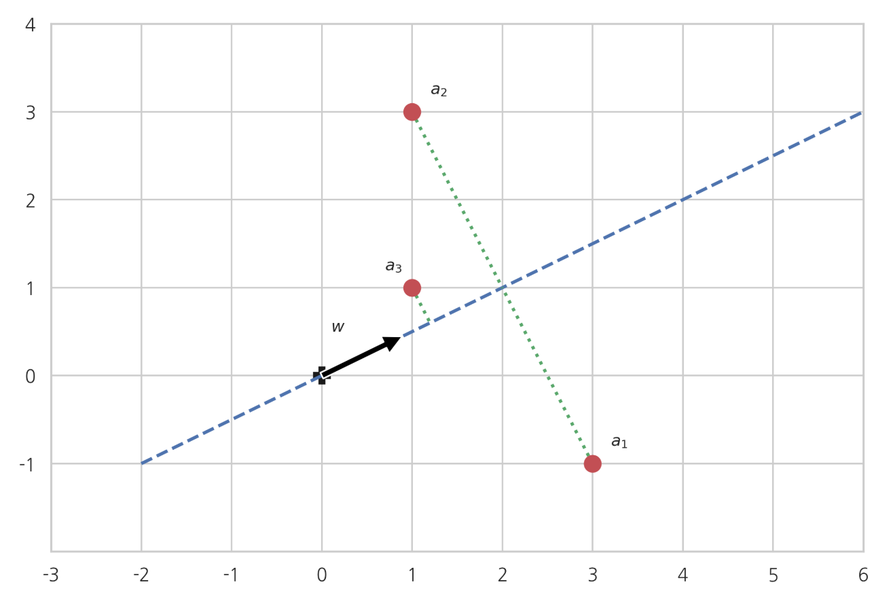

특잇값 분해 Singular Value Decomposition, SVD
Summary
SVD는 𝑁×𝑀크기의 행렬 𝐴를 다음과 같은 3개의 행렬의 곱으로 나타내는 것이다. 특이값, 왼쪽 특이벡터, 오른쪽 특이벡터로 분해 된다.
정방행렬이 아닌 행렬은 고유분해가 불가능하다. 대신 고유분해와 비슷한 특이분해(singular decomposition)를 할 수 있다.
특잇값과 특이벡터
x크기의 행렬 를 다음과 같은 3개의 행렬의 곱으로 나타내는 것을 특이분해(singular-decomposition) 또는 특잇값 분해(singular value decomposition)라고 한다.
여기에서 U, S, V는 다음 조건을 만족해야 한다.
- : 대각성분이 양수인 대각행렬이어야 한다.큰 수부터 작은 수의 순서로 배열한다.
- : 𝑁×𝑁차원 정방행렬. 모든 열벡터가 단위벡터이고 서로 직교해야 한다.(orthonormal).
- : 𝑀×𝑀차원 정방행렬. 모든 열벡터가 단위벡터이고 서로 직교해야 한다(orthonormal).
위 식을 만족하는 행렬 S의 대각성분들을 특잇값(singular value), 행렬 U의 열벡터들을 왼쪽 특이벡터(left singular vector), 행렬 v의 행벡터들을 오른쪽 특이벡터(right singular vector)라고 부른다.
특잇값의 갯수는 행렬의 열과 행의 갯수 중 작은 값과 같다. 특이분해된 형태를 구체적으로 쓰면 다음과 같다.
- 만약 𝑁>𝑀이면 Σ 행렬이 𝑀개의 특잇값(대각성분)을 가지고 다음처럼 아랫 부분이 0행렬이 된다.
- 반대로 𝑁<𝑀이면 Σ 행렬이 𝑁개의 특잇값(대각성분)을 가지고 다음처럼 오른쪽 부분이 0행렬이 된다.
행렬의 크기만 표시하면 다음과 같다.
N>M 일 경우
M>N 일 경우
예를 들어 행렬 A는 다음처럼 특이분해 할 수 있다.
특이값 분해의 축소형
특잇값 대각행렬에서 0인 부분은 사실상 아무런 의미가 없기 때문에 대각행렬의 0 원소부분과 이에 대응하는 왼쪽(혹은 오른쪽) 특이벡터들을 없애고 다음처럼 축소된 형태로 해도 마찬가지로 원래의 행렬이 나온다.
- N > M 일 경우, 왼쪽(U) 특이벡터 중에서 을 없앤다.
- M > N 일 경우, 오른쪽(V^T) 특이벡터 중에서 을 없앤다.
축소형의 경우를 행렬의 크기만 표시하면 다음과 같다.
- N > M
- M > N
- 예를 들어 행렬 A의 특이분해 축소형은 다음과 같다.
특이분해의 존재
이러한 특이분해는 모든 행렬에 대해 가능하다. 즉 어떤 행렬이 주어지더라도 위와 같이 특이분해할 수 있다. 여기에 대한 증명은 이 책의 범위를 벗어나므로 생략한다.
파이썬을 사용한 특이분해
numpy.linalg 서브패키지와 scipy.linalg 서브패키지에서는 특이분해를 할 수 있는 svd명령을 제공한다. 오른쪽 특이행렬은 전치행렬로 출력된다는 점에 주의하라.
from numpy.linalg import svd
A = np.array([[3, -1], [1, 3], [1, 1]])
U, S, VT = svd(A)
U
# U의 (왼쪽 특이벡터)
array([[-4.08248290e-01, 8.94427191e-01, -1.82574186e-01],
[-8.16496581e-01, -4.47213595e-01, -3.65148372e-01],
[-4.08248290e-01, -2.06937879e-16, 9.12870929e-01]])
S
# S의 (특잇값)
array([3.46410162, 3.16227766])
np.diag(S, 1)[:, 1:]
# np.diag(S, 1)[:, 1:] (행, 렬 수를 맞춰주기 위해서)
array([[3.46410162, 0. ],
[0. , 3.16227766],
[0. , 0. ]])
VT
# VT (오른쪽 특이벡터, 결과는 전치행렬로 출력된다.)
array([[-0.70710678, -0.70710678],
[ 0.70710678, -0.70710678]])
U @ np.diag(S, 1)[:, 1:] @ VT
# U @ np.diag(S, 1)[:, 1:] @ VT 의 결과 (특이분해 결과, 원래의 행렬이 출력된다.)
array([[ 3., -1.],
[ 1., 3.],
[ 1., 1.]])
- 축소형을 구하려면 인수
full_matrices=False로 지정한다.
U2, S2, VT2 = svd(A, full_matrices=False)
U2
# U2 (왼쪽특이벡터)
array([[-4.08248290e-01, 8.94427191e-01],
[-8.16496581e-01, -4.47213595e-01],
[-4.08248290e-01, -2.06937879e-16]])
S2
#S2 (특잇값)
array([3.46410162, 3.16227766])
VT2
#VT2 (오른쪽 특이벡터)
array([[-0.70710678, -0.70710678],
[ 0.70710678, -0.70710678]])
U2 @ np.diag(S2) @ VT2
array([[ 3., -1.],
[ 1., 3.],
[ 1., 1.]])
특잇값과 특이벡터의 관계
행렬 𝑉는 정규직교(orthonormal)행렬이므로 전치행렬이 역행렬이다.
정방 행렬 A에 대한 역행렬은 원래의 행렬 A와 다음 관계를 만족하는 정방 행렬을 말한다. I는 항등 행렬(identity matrix) 이다.
특이분해된 등식의 양변에 𝑉를 곱하면,
행렬 𝐴를 곱하여 정리하면 𝑀 > N 때는
N > M 일 때는
즉, 𝑖번째 특잇값 𝜎𝑖와 특이벡터 𝑢𝑖, 𝑣𝑖는 다음과 같은 관계가 있다.
이 관계는 고유분해와 비슷하지만 고유분해와는 달리. 좌변과 우변의 벡터가 다르다.
위에서 예로 들었던 행렬의 경우 아래와 같이 성립한다. (좌변(v)과 우변(u)의 벡터가 다르다.)
특이분해와 고유분해의 관계
행렬 𝐴의 공분산행렬 는
가 되어 행렬 𝐴의 특잇값의 제곱(과 0)이 공분산행렬 의 고유값, 행렬 𝐴의 오른쪽 특이벡터가 공분산행렬 의 고유벡터가 된다.
위 식에서 Λ은 𝑁이 𝑀보다 크면 아래와 같다.
위 식에서 Λ은 𝑁이 𝑀보다 작으면 아래와 같다.
마찬가지 방법으로 행렬 𝐴의 왼쪽 특이벡터가 공분산행렬 의 고유벡터가 된다는 것을 증명할 수 있다.
Numpy 로 증명
w, V = np.linalg.eig(A.T @ A)
w # A.T A의 고윳값
# 결과 array([12., 10.])
S ** 2 # A의 특잇값의 제곱
# 결과 array([12., 10.])
V # A.T A의 고유벡터
# 결과
# array([[ 0.70710678, -0.70710678],
# [ 0.70710678, 0.70710678]])
VT.T # A의 오른쪽 특이벡터
# 결과
# array([[-0.70710678, 0.70710678],
# [-0.70710678, -0.70710678]])
1차원 근사
2차원 평면위에 3개의 2차원 벡터 가 있다. 원점을 지나면서 모든 점들과 가능한한 가까이 있는 직선을 만들고 싶다면 직선의 방향을 어떻게 해야 할까? 직선의 방향을 나타내는 단위 벡터를 𝑤라고 하자.

벡터 𝑤와 점 𝑎𝑖의 거리의 제곱은 다음처럼 계산할 수 있다.
연습 문제 2.5.9
만약 v가 원점을 지나는 직선의 방향을 나타내는 단위 벡터라고 하자. 이 때 그 직선위에 있지 않는 어떤 점 x와 그 직선과의 거리의 제곱이 다음과 같다.
풀이;
직선위에 있지 않는 어떤 점 x와 그 직선과의 거리는 피타고라스의 정의에 의해 다음과 같다.
이 때 직교성분의 길이를 구하면 v가 단위벡터라는 점을 이용하면 다음과 같다.
따라서 직선위에 있지 않는 어떤 점 x와 그 직선과의 거리의 제곱이 다음과 같다.
연습 문제 2.3.2
행렬 𝐴()의 놈의 제곱이 그 행렬을 이루는 행 벡터 의 놈의 제곱의 합 또는 열 벡터 의 놈의 제곱의 합과 같다.
풀이;
벡터 𝑎1,𝑎2,𝑎3를 행벡터로 가지는 행렬 𝐴를 가정하면
행벡터의 놈의 제곱의 합은 행렬의 놈이므로 모든 점들과의 거리의 제곱의 합은 행렬의 놈으로 계산된다. 점 의 위치가 고정되어 있으므로 행렬 𝐴의 놈 값은 고정되어 있다. 따라서 이 값이 가장 작아지려면 의 값이 가장 크게 만드는 𝑤를 찾아야 한다. 이 문제는 다음처럼 수식으로 쓸 수 있다.
1차원 근사의 풀이
위에서 예로 든 행렬 를 특이분해하면 2개의 특잇값, 왼쪽/오른쪽 특이벡터를 가진다. 이를 각각 다음처럼 이름붙인다.
첫번째 특잇값: , 첫번째 왼쪽 특이벡터 , 첫번째 오른쪽 특이벡터 두번째 특잇값: , 두번째 왼쪽 특이벡터 , 두번째 오른쪽 특이벡터
1) 첫번째 특잇값 은 두번째 특잇값 보다 같거나 크다. 2) A에 오른쪽 특이벡터를 곱하면 왼쪽 특이벡터 방향이 된다.
3) 오른쪽 특이벡터 는 서로 직교하므로 (같은 방향이 아니라서) 선형독립이고 2차원 평면공간의 기저벡터가 될 수 있다.
4) 우리는 ‖𝐴𝑤‖의 값이 가장 크게 만드는 𝑤를 찾아야 하는데 𝑤는 2차원 벡터이므로 2차원 평면공간의 기저벡터인 의 선형조합으로 표현할 수 있다. 단, 𝑤도 단위벡터이므로 는 다음 조건을 만족해야 한다. 5) 이 때 ‖𝐴𝑤‖의 값은 6) 𝜎1>𝜎2>0이므로 라는 조건을 만족하면서 위 값을 가장 크게하는 값은 7) 즉, 첫번째 오른쪽 특이벡터 방향으로 하는 것이다. 8) 이 때 ‖𝐴𝑤‖는 첫번째 특잇값이 된다.
위에서 예로 들었던 행렬 A의 경우에는
첫번째 오른쪽 특이벡터가 가장 거리의 합이 작은 방향이 된다.
이 때의 거리의 제곱의 합은 다음과 같다.
일반적인 풀이
공분산행렬의 고유분해 공식을 이용하면 아래와 같다.
이 식에서 M은 0이 아닌 특잇값의 갯수이다. 즉 우리가 풀어야 할 문제는 다음과 같다. {% math %} \arg\maxw \Vert Aw \Vert^2 = \arg\max_w \sum{i=1}^{M}\sigma^2_i\Vert v_i^Tw\Vert^2 {% endmath %} 위 값을 가장 크게 하려면 w를 가장 큰 특잇값에 대응하는 오른쪽 고유벡터 v1으로 해야한다.
랭크-1 근사문제
를 에 투영한 벡터는 아래와 같다.
벡터를 이용하면 개의 차원 벡터 를 1차원으로 투영(projection)하여 가장 비슷한 𝑁개의 1차원 벡터 를 만들 수 있다
이 답은 원래 행렬 𝐴에 랭크-1 행렬 를 곱해서 원래의 행렬 𝐴와 가장 비슷한 행렬 𝐴′을 만드는 문제와 같다.
위의 문제를 랭크-1 근사문제(rank-1 approximation problem)라고도 한다.
K 차원 근사
이번에는 𝑁개의 𝑀차원 벡터 를 1차원이 아니라 정규직교인 기저벡터 로 이루어진 𝐾차원 벡터공간으로 투영하여 가장 비슷한 𝑁개의 𝐾차원 벡터 를 만들기 위한 정규직교 기저벡터 를 찾는 문제를 생각하자. 이 문제는 랭크-𝐾근사문제라고 한다.
기저벡터행렬을 𝑊라고 하자.
정규직교 기저벡터에 대한 벡터 𝑎𝑖의 투영 𝑎𝑖^‖𝑤는 각 기저벡터에 대한 내적으로 만들 수 있다.
벡터 𝑎1,𝑎2,⋯,𝑎𝑁를 행벡터로 가지는 행렬 𝐴를 가정하면
모든 점들과의 거리의 제곱의 합은 다음처럼 행렬의 놈으로 계산할 수 있다.
행렬 𝐴는 이미 주어져있으므로 이 값을 가장 작게 하려면 두번째 항의 값을 가장 크게 하면 된다. 두번째 항은 K=1일 때와 같은 방법으로 공분산행렬 형태로 바꿀 수 있다.
공분산행렬의 고유분해를 사용하면
가장 큰 𝐾개의 특잇값에 대응하는 오른쪽 특이벡터가 기저벡터일 때 가장 값이 커진다.
랭크-K 근사문제
우리가 찾아야 하는 것은 이 값을 가장 크게 하는 𝐾개의 영벡터가 아닌 직교하는 단위벡터 𝑤𝑘이다. 고유분해의 성질로부터 오른쪽 기저벡터 중 가장 큰 𝐾개의 특잇값에 대응하는 오른쪽 특이벡터가 우리가 찾는 기저벡터가 된다.
랭크-𝐾 근사문제의 형태로 만들 수도 있다.
이러한 투영벡터를 모아놓은 행렬 𝐴′는
이 문제는 원래 행렬 𝐴에 랭크-K 행렬 를 곱해서 원래의 행렬 𝐴와 가장 비슷한 행렬 𝐴′을 만드는 문제와 같다